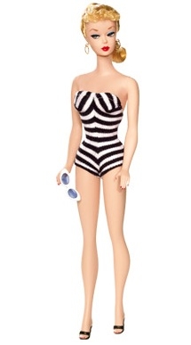
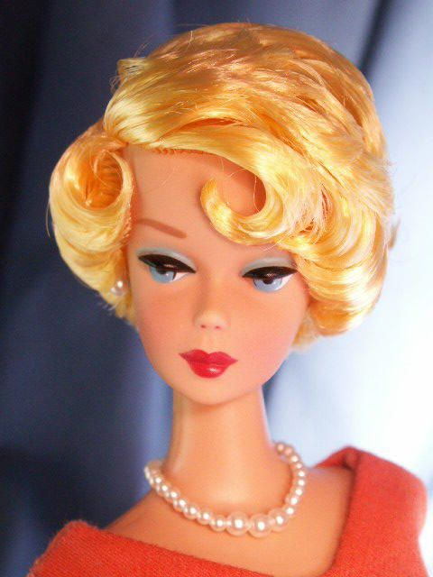

Barbie is a doll that was first manufactured in 1959 and has continued on till this day. Barbie was meant to be created to show girls what they could be when they grow up. And whenever a trend was created, Barbie imediatly released a new set related to that trend. Barbie is known to have over 100 careers and the numbers keep on increasing!
Now that we have been intuduced to Barbie, let me tell you about Barbie's founder, Ruth Handler. She got inspiration for a Barbie doll, by watching her daughter Barbara playing with paper dolls. She decided to name her new creation "Barbie" (which was named after Barbara). In no time, the news spread like wild fire, and billions and billions of copys were made. Here's a image of how the first barbie doll looked like.
Now Let me take you back in time to see the journey of Barbie. Ruth decided to start a company with a decent amount of employees. She sold them for 3$. After a few years, Barbie became very popular! Seeing the improvement in her company, Ruth decided to make younger dolls, and Male dolls too! She decided to add more clothing, more shoes,and more accessories too. Then, they decided since they had dolls, why not add a Dollhouse? In 2002 Ruth Handler died, so the company had a little bit of problems. But in 3 years, Barbie was back zooming! And she came back better than ever! As the styles changed, so did Barbie! And soon after, Holiday Barbies came out to show the world what Barbie would like on Christmas day! And when machines were more high tech, Barbie was able to make things like, a Pizza station, a cafe, and more!
